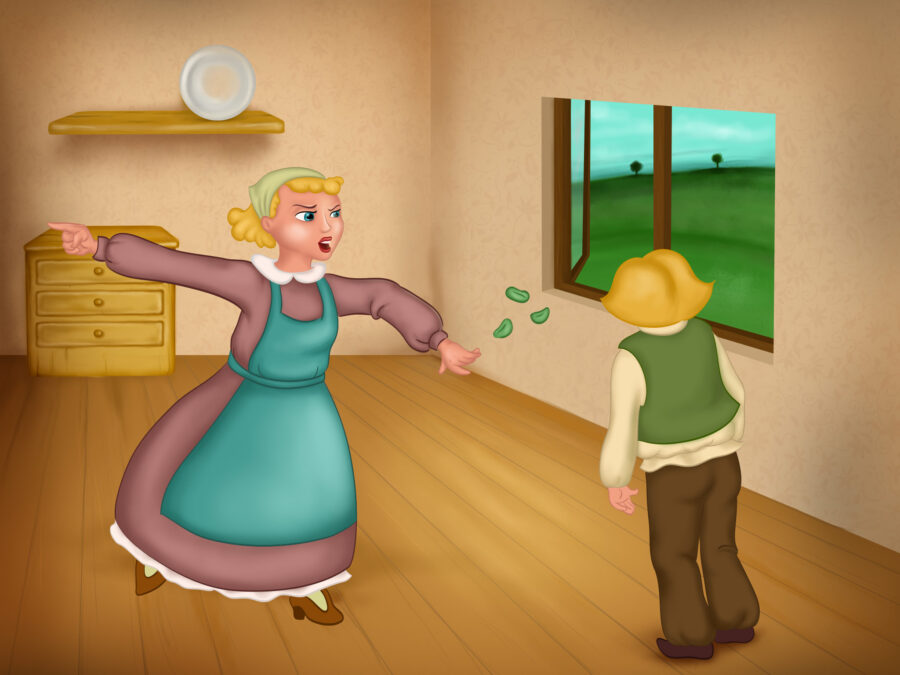

Hi! My name is Jack and I live with my mother. We were never very rich, but we had a dairy cow and she gave us enough milk to sell and live off. But one day, she stopped producing milk and mum told me to go to the market and sell her.
The next day I did as she had said and went to the market. On the way there I was really sad, because I didn’t wanted to sell our cow. She had been part of the family. An old man stopped me as I was walking. "Young man, I'd like to buy that cow," he said. “What will you give me for her?” I asked. “Five magic beans," he replied. We shook hands on it and I took the beans home.
When my mother saw the beans she got so mad at me and began to yell: “There is no such thing as magic! Magic beans, indeed! Go to your room, you're not getting any dinner tonight!” And with that she threw the beans out of the window. I went to bed very sad, because I had disappointed my mum.
The next morning I woke up, and was so surprised when I looked out of the window. The beans had grown overnight into a huge beanstalk. I clambered out of the window and climbed up the beanstalk to a land high in the sky. I soon came across a castle.
I discovered that the castle belonged to a giant but he wasn’t at home. However, the giant’s wife was there and she invited me in to have some breakfast. I hadn't eaten since lunchtime the day before, so I was starving. I thanked her and started eating.
“Fee-fi-fo-fum, I smell the blood of an Englishman. Be he alive, or be he dead, I’ll grind his bones to make my bread!”, someone shouted and I saw the giant coming into the castle. The giant’s wife had pity on me and hid me. “There's no one here," I heard her saying.
The giant calmed down, sat down to have his lunch and then began to count the gold coins inside some sacks. After a while he got tired of counting and decided to take a nap.
Shortly after the giant had fallen asleep, I sneaked into his room, and decided to take one of his sacks of gold. I ran out of the castle and down the beanstalk as fast as I could. When I got home and showed my mum the sack brimming with gold, she was delighted!
We lived well on the gold for a while, but eventually it ran out and I had to climb up the beanstalk again. I went back to the castle and saw the giant's wife. The giant came home and could smell me. Luckily for me, the giant's wife was willing to hide me again. “No one is here," she told her husband. And he believed her.
This time he had a hen with him. “Lay!" the giant commanded the hen and and immediately the hen laid a gold egg. I waited for the giant to take a nap and stole his hen. This time the giant heard the hen squawking and ran after me, but he couldn’t catch me. I escaped down the beanstalk. When my mum saw the hen, she was very happy with me again.
After a while, I went to the giant’s castle for a third time. I didn't tell the giant’s wife that I was there. The giant came back home for lunch and shouted his horrible rhyme again: “Fee-fi-fo-fum, I smell the blood of an Englishman. Be he alive, or be he dead, I’ll grind his bones to make my bread!” His wife told him she was alone at home.
This time the giant had brought home a harp that could play songs on its own. The harp soon lulled him to sleep. While he was sleeping I grabbed the harp and was just about to leave when the harp played a loud song, which woke the giant up. He started chasing me and almost caught me, but I was still too fast for him and sped down the beanstalk.
The giant was still following me, but as soon as I got home I searched around for an axe. When I found one, I cut the beanstalk down and the giant fell to his death. Because of the harp and the hen we have become very rich and now my mum and I live a very happy life on our farm.
Thank you for reading the story! Hope you understood it.
Let’s Test your Understanding?
Yes
No
Reference: https://taleswithgigi.com/jack-and-the-beanstalk/